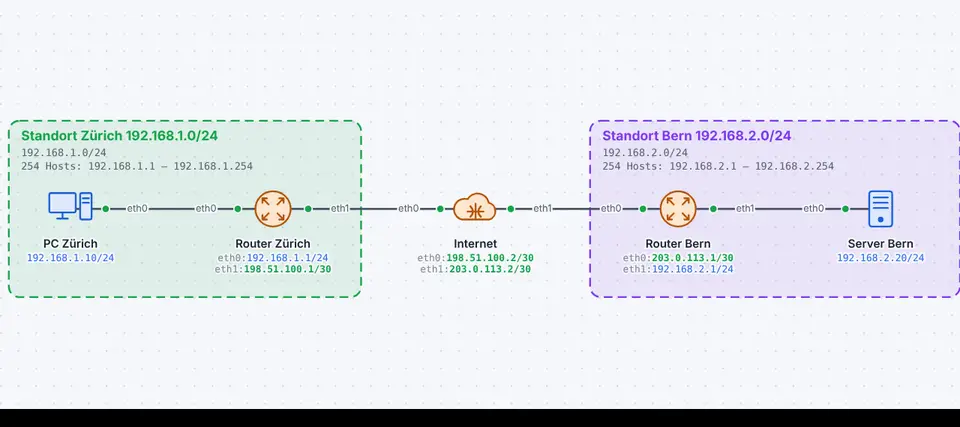
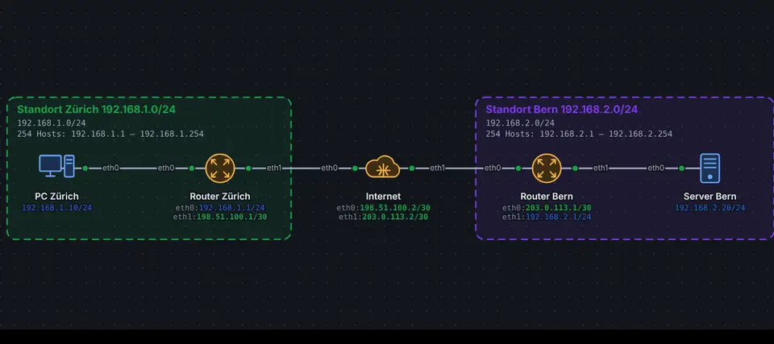

A company with sites in Zurich and Bern wants to connect its networks without renting an expensive leased line. A site-to-site VPN builds an encrypted tunnel through the internet: to the devices it looks as if both networks were directly connected.
IKEv2: negotiating the tunnel
Before data flows, the two routers agree with IKEv2 (UDP 500):
IKE_SA_INIT: choose the algorithms, exchange key material (Diffie-Hellman).
IKE_AUTH: authenticate each other, here with a pre-shared key, and define which networks may use the tunnel (traffic selectors).
The networks must match mirrored: what in Zurich is “local 192.168.1.0/24, remote 192.168.2.0/24” must be exactly the other way round in Bern. Otherwise the partner refuses.
ESP: wrapping packets
In tunnel mode ESP (Encapsulating Security Payload) wraps the whole original IP packet and puts a new IP header in front, from router to router:
[ IP 198.51.100.1 → 203.0.113.1 | ESP (SPI, no.) | encrypted: IP 192.168.1.10 → 192.168.2.20 | ICMP ]
On the internet you only see the routers’ public addresses, not who is talking to whom inside. Tunnel traffic bypasses NAT.


Slow motion Site-to-site VPN: packets travel encrypted through the tunnel
In leyoNET
Under Advanced → VPN at the router: name, partner address, local and remote network, key. In the simulation the tab shows the state of the tunnel; the packet list shows IKE and ESP with real headers. The encryption itself is only hinted at.
How to do it in leyoNET
The same text as in the app’s help (F1 key).
VPN (IPsec)
A site-to-site VPN connects two sites over the Internet as if they were in the same company network. The routers set up an encrypted IPsec tunnel.
On both routers a tunnel is entered in the VPN tab:
peer: public address of the other router
local network and remote network – exactly mirrored on the other side
pre-shared key, the same on both sides
The first packet to the remote network starts the negotiation with IKEv2 (UDP 500): first IKE_SA_INIT (algorithms and key material), then IKE_AUTH (both prove they know the key and agree on the networks). If the key does not match, authentication fails.
After that, packets travel in ESP (IP protocol 50): outside the public router addresses, inside the whole original packet, encrypted. The packet list and the OSI window show both headers; a capture on the Internet shows only unreadable bytes. NAT does not apply to tunnel traffic, and the remote network needs no route.
Simplified: no real cryptography, no rekeying, no NAT traversal. Filters: esp, ike, vpn. See also Firewall.
See an example
VPN: connecting two sites
Zürich and Bern are connected via the Internet. An IPsec tunnel between the routers turns them into one company network.
The PC in Zürich pings the server in Bern. First the routers negotiate the tunnel with IKEv2, then packets travel encrypted in ESP. Filter «vpn».
Three data centres, three designs: Zurich three-tier (core, distribution, access), Bern with combined core and distribution, Basel as collapsed core. All devices are mounted in racks, the ports carry the colour of their VLAN. The sites connect via fibre, cable modem and VDSL, linked with IPsec tunnels.
A server in Zurich pings the NAS in Bern through the VPN tunnel, monitoring fetches the Basel web page by its DNS name, Bern queries the DNS server in Zurich, and Basel pings the Zurich monitoring.
“Watch live” opens the network in leyoNET, the simulation runs in a loop. In the app you find it under File → Demo networks, with a step-by-step tour.
Practise
★★★★☆VPN: connecting Zürich and Bern· 2 goals · Worksheet (German)
In leyoNET under Tools → Exercise catalogue. Every exercise checks itself.
What leyoNET simplifies
Protocol
Layer
Simplification in the simulation
IPsec ESP (tunnel mode)
3
Whole IPv4 packet in ESP (IP protocol 50) between the router addresses; SPI, sequence number and 16-byte ICV in the capture, payload only scrambled (no real encryption); no anti-replay window, no NAT traversal; tunnel traffic bypasses NAT
IKEv2
7
IKE_SA_INIT and IKE_AUTH with a real header (SPIs, exchange type, flags); Diffie-Hellman only hinted at, authentication with a pre-shared key as check value; traffic selectors must match mirrored (otherwise TS_UNACCEPTABLE); three attempts of 2 s; no rekeying, no CREATE_CHILD_SA
Standards
RFC 4301 – Security Architecture for the Internet Protocol
RFC 4303 – IP Encapsulating Security Payload (ESP)
RFC 7296 – Internet Key Exchange Protocol Version 2 (IKEv2)
Read on
NAT and PATBringing private networks to the internet: port address translation (PAT), port forwarding, static SNAT and DNAT, 1:1 NAT and CGNAT at the provider.
Firewall rules (packet filter)Rules from top to bottom, default rule, stateful or stateless – how a router or firewall decides what may pass.